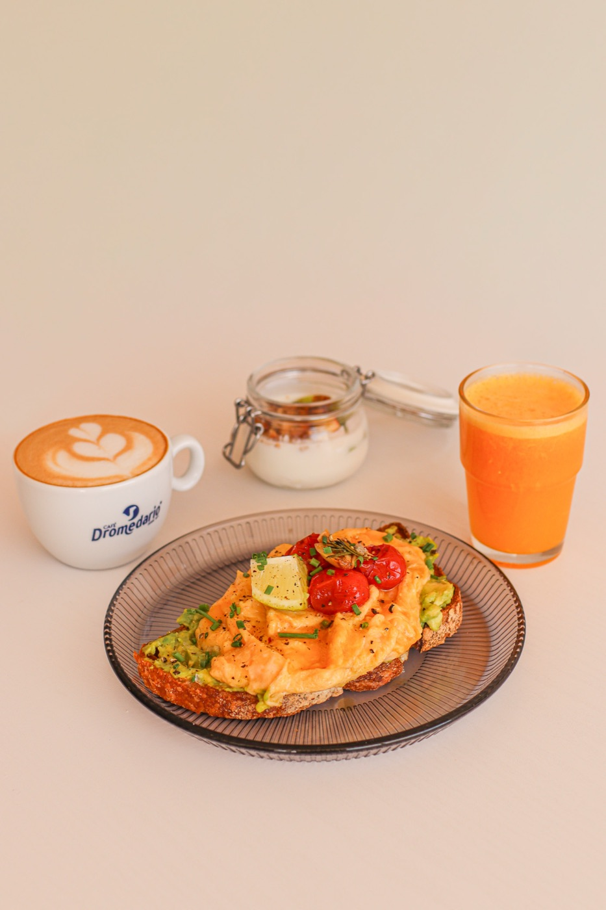

Fisko Café · La Quinta · Santa Úrsula · Teneriffa
Wir wollen nicht dein Lieblingscafé sein.
…nur dein Fisko Ruhe, Kaffee und gutes Leben.
Donnerstag bis Montag · 8–15 Uhr
- KaffeeDon Manuel, geröstet auf La Palma
- Brot100 % Sauerteig
- JoghurtZiegenmilch, 100 % von hier
- HonigHandgemacht, aus Teneriffa
- GranolaHausgemacht
fis·ko
Substantiv, kanarisches Spanisch, seit 2025
„Ein bisschen, ein Weilchen, eine kleine, aber ausreichende Menge.“
So erklärt Fisko seinen Namen. Die Idee passt in eine Tasse: Specialty Coffee, echtes Brot und eine ruhige Zeit in der Sonne von La Quinta. „Unsere Produkte sind frisch, von lokalen Erzeugern und Lieferanten.“
— Aus der Karte von Fisko, Saison 26/27


Schau, wie wir deinen Tisch mit Brunch füllen.
ein Sonntags-Fisko · jeden Tag
Brunch für zwei
39 €für 2 Personen
Zum Teilen, ganz in Ruhe. An jedem Öffnungstag.
Ein Kaffee für jeden
Café con leche, Cappuccino, Americano oder Espresso. Specialty Coffee Don Manuel, Herkunft Huila (Kolumbien).
Ein Saft für jeden
Mit frisch gepressten Orangen: Beeren-Orange, Mango-Orange oder Orange.
Der Brotkorb
Sauerteiglaib (100 % Sauerteig), Bananenbrot und handgemachtes Brioche, dazu geriebene Tomate, natives Olivenöl extra, Butter und Marmelade.
Zwei Hauptgerichte zur Wahl
Avocado-Ei-Toast, Veggie-Sandwich oder Bacon-Brioche mit Ei.
Etwas Süßes zum Teilen
Honig-Pancakes oder Ziegenjoghurt-Bowl.
It’s lunch o’clock
13 bis 15 UhrEntdecke unser Mittagsmenü
18 €
Reis-Bowl mit in Scheiben geschnittener Hähnchenbrust aus dem Ofen, Avocado, Gemüse und Ei von der Plancha.
Inklusive Saft des Tages aus Saisonobst, Espresso oder Cortado und 90 g Joghurt mit Obst und Granola.
die Karte · Saison 26/27
Zum Essen
Sauerteig und handgemachtes Brioche, cremige Eier und Produkte von hier. Preise inkl. IGIC (kanarische Steuer).
Avocado-Ei-Toast
7 €Sauerteiglaib (100 % Sauerteig) mit zerdrückter Avocado und cremigem Rührei.
Fiskodela
8,50 €Sauerteig-Sandwich mit saftigem Mozzarella, Mortadella und Rucola, dazu confierte Kirschtomaten und grünes Pesto.
Klassisches Sandwich
5,50 €Handgemachtes Brioche, geschmolzener Gouda und Cheddar mit Kochschinken. Knusprig und cremig.
Veggie
7 €Sauerteig-Sandwich mit gerösteter Aubergine und Zucchini, Rucola und zerdrückter Avocado.
Fisko Hähnchen
7,50 €Traditionell und frisch! Handgemachtes Brioche mit saftiger Hähnchenbrust aus dem Ofen, Rucola, Tomate, roter Zwiebel und etwas Mayonnaise.
Bacon-Brioche
7 €Eine Scheibe handgemachtes Brioche, cremige Eier und knuspriger Bacon mit Palmsirup.
Ibérico-Eier
7 €Cremiges Rührei mit Schinken und Sauerteigbrot, dazu confierte Tomaten.
Pancakes
6,50 €Fluffig, mit frischem Obst der Saison, handgemachtem Honig aus Teneriffa und Kokosraspeln.
Joghurt-Bowl 200 g
6,50 €Cremiger Ziegenjoghurt, 100 % von hier, mit frischem Obst der Saison und hausgemachtem Granola.
- ExtrasEi 1 € · Avocado 2 € · Bacon 1,50 € · Serrano-Schinken 2 €

Zum Trinken
Kaffee
Don Manuel · geröstet auf La Palma · Herkunft Huila
- Espresso1,40
- Doppelter Espresso1,90
- Bombón (Espresso, Kondensmilch)1,60
- Americano2,00
- Cortado1,70
- Café con leche (Milchkaffee)2,00
- Cappuccino2,50
- Leche y leche1,90
- Zaperoco3,50
- Kakao mit Milch1,80
Extras: Hafermilch +0,20 · Eis +0,20 · groß +0,50
Cold Brew
- Caramel Latte Cold Brew3,80
- Pistazien Latte Cold Brew4,20
Tee & Aufgüsse
- Hafer-Matcha-Latte3,00
- Schwarzer Chai2,00
- Marokkanischer Grüntee2,00
- Kamille2,00
- Rooibos2,00
- Ingwer-Zitrone2,00
- Lindenblüte2,00
Frische Säfte
Frisch zubereitet
- Frisch gepresster Orangensaft3,80
- Saft des Tages4,50
- Açaí mit Banane und Kokoswasser4,80
- Kokos-Limonade3,80
- Kombuchas3,50
Weitere Getränke
- Wasser still oder mit Kohlensäure 0,5 l2,00
- Le Tribute Tonic2,80
- Pepsi Zero2,00
- Helles Bier2,00
- Alkoholfreies Bier2,00
Hausgebäck
- Bananenbrot3,70
- Cookie mit Pistazie und weißer Schokolade4,00
- Alfajor mit Dulce de leche2,50
Preise in Euro, inkl. IGIC. Allergenkarte an der Theke erhältlich. Die Karte wechselt mit der Saison: im Zweifel einfach fragen.
was Gäste sagen
148 Gäste haben es schon probiert
„der beste Kaffee, den ich bisher auf Teneriffa hatte!“— Arina R., bei Google (übersetzt)
„Wir haben hier gefrühstückt und waren begeistert. Der Ort ist wunderschön, bis ins Detail gepflegt und sehr gemütlich. […] die Toasts spektakulär, schön angerichtet und voller Geschmack, und der Kaffee perfekt. Alles war so gut wie schön.“(übersetzt)
„Ein reizendes kleines Café, dessen Team alles tut, damit man sich willkommen fühlt. […] Der Kakao ist einer der besten, die ich bisher hatte! Immer ein toller Ort, besonders morgens in der Sonne auf der Terrasse.“(übersetzt)
„Ein ruhiger Ort mit familiärer Atmosphäre, an dem Produkt und Gäste gleichermaßen umsorgt werden. […] Der Inhaber ist immer da, aufmerksam und berät gern, mit großer Kenntnis der Karte.“(übersetzt)
„Der beste Ort zum Frühstücken im Norden Teneriffas. […] Auch der Kaffee ist sehr lecker, und der Service: 10/10.“(übersetzt)
„Ein Ort, der mit Liebe gemacht ist, und das merkt man. Der Kaffee hat mich positiv überrascht, im Geschmack wie im Preis. […] der Ort ist sehr schön.“(übersetzt)
„Toller Ort für Frühstück oder Brunch, mit schönem Blick aufs Meer, leckerem Essen und gutem Kaffee! Die Toasts sind super […]“(übersetzt)
„Service und Atmosphäre sind spektakulär. Ein magischer Ort, perfekt, um etwas zu trinken und mit Freunden eine schöne Zeit zu verbringen. 100 % empfehlenswert.“(übersetzt)
„Gute Auswahl an gesunden und leckeren Frühstücksoptionen, der beste Kaffee, den ich bisher auf Teneriffa hatte!“(übersetzt)
Ein sonniger Winkel in La Quinta

Sonnige Terrasse
Tische draußen, Sonnenschirme und Morgensonne. „Especially with the sun in the morning sitting on the terrace“, schreibt Felix B.
Coworking & WLAN
Laptop mitbringen: Es gibt Platz zum Arbeiten und kostenloses WLAN.
Ecke für Kinder
Wir haben einen eigenen Bereich für die Kleinen.
Haustiere willkommen
Auch Hunde gehören zu unseren Stammgästen.
wann kommen
Öffnungszeiten
- Montag8–15 Uhr
- DienstagGeschlossen
- MittwochGeschlossen
- Donnerstag8–15 Uhr
- Freitag8–15 Uhr
- Samstag8–15 Uhr
- Sonntag8–15 Uhr
- Küche bis 14:30 Uhr
- Mittagsmenü 13–15 Uhr
- Feiertage und Nachmittage: bitte anrufen
wo
La Quinta
C. Bicacarera 19, Lokal 1La Quinta · 38390 Santa Úrsula · Teneriffa
- Telefon
- 822 69 27 76
- fiskocafe@gmail.com
- @fiskocafe